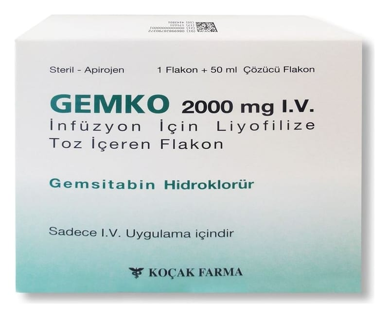

Gemko 2000 mg I.V İnfüzyon İçin Liyofilize Toz İçeren Flakon, Flakon, 1 Adet

Ne için kullanılır
KT · Bölüm 1GEMKO ambalajı, toz içeren cam bir flakondan oluşur. Toz halinde bulunan GEMKO beyaz ila beyazımsı krem renktedir. 50 ml steril %0.9 enjeksiyonluk sodyum klorür ile hazırlanan çözelti renksiz veya açık sarı renkli, berraktır.
Hastane eczacısı, hemşire veya doktor GEMKO’yu steril sodyum klorür çözeltisinde çözüp poşet veya pompadan geçirerek tüp ve iğne yardımıyla damarlarınızdan birine verir. Buna
intravenöz infüzyon adı verilir.
GEMKO sitotoksik bir ilaçtır. Sitotoksik ilaçlar kanser hücreleri de dahil olmak üzere bütün bölünen hücreleri öldürür.
GEMKO, mesane kanseri, akciğer kanseri (‘Küçük Hücreli Dışı’ tipi), pankreas kanseri, meme kanseri ve over (yumurtalık) kanseri hastalarının tedavisinde kullanılır. Eğer doktorunuz size bu ilacı başka bir nedenle verdiyse, ilaçla ilgili her türlü sorunuzu doktorunuza sorunuz.